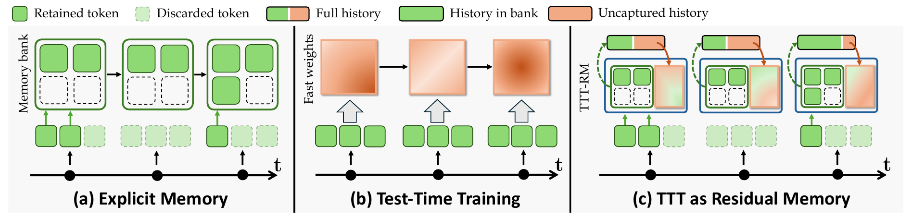
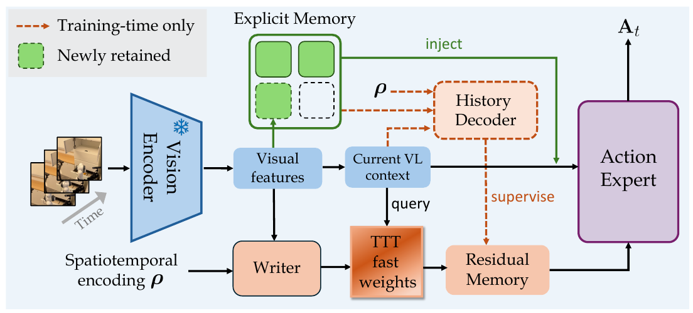

TTT-RM
Test-Time Training as Residual Memory for Robot Policies
Remembering task-relevant history beyond the current observation and explicit memory.
Abstract
Memory is essential for long-horizon robotic manipulation, where successful actions may depend on past events that are no longer recoverable from the current observation. As episodes grow longer, however, retaining the full history becomes increasingly costly, creating a fundamental scalability challenge for memory-augmented policies. Existing approaches address this challenge by either storing selected past observations in a bounded memory bank or compressing interaction history into a fixed-size parametric state through Test-Time Training (TTT). Yet these formulations do not explicitly distinguish between historical information that can already be recovered from the policy’s current context and information that must persist beyond it.
We introduce TTT-RM, which repurposes TTT as Residual Memory, using fast weights not to generically compress history but to complement a bounded memory bank by preserving task-relevant historical information that cannot be recovered from the policy’s current context. Concretely, TTT-RM learns a history decoder that reconstructs historical representations from the current observation and retrieved memory. The resulting reconstruction residual captures what this context fails to explain and serves as the learning target for TTT. The TTT slow weights are optimized against this residual target so that online fast-weight updates learn to encode complementary historical information over time. The fast-weight state is then queried to produce a residual memory representation that conditions action generation.
Extensive experiments on memory-intensive simulation benchmarks and real-world tasks show that TTT-RM consistently improves across multiple memory designs, outperforms diverse baselines, and supports sustained execution on a three-minute, eight-stage stowing task.


How TTT-RM Works
A complementary memory pathway that reuses the existing visual stream, with no additional encoder or VLM forward passes.
Identify what is missing
A history decoder reconstructs past representations from the current observation and retrieved memory. Its reconstruction residual defines the information this context cannot explain.
Learn residual memory
Residual supervision trains the slow write and read parameters so that online fast-weight updates preserve complementary historical information within a fixed-size state.
Recall history for control
Explicit and residual memory jointly condition action generation. At inference, the history decoder is removed; fast weights update once per policy call and reset each episode.


Simulation Results
Consistent gains across memory designs and tasks that require remembering past observations.
| Memory configuration | Explicit Memory | TTT-RM | Gain (pp) |
|---|---|---|---|
| TokenDrop / Expert | 34.5±0.4 | 37.1±1.2 | +2.6 |
| FrameSamp / Expert | 36.7±1.0 | 38.9±0.8 | +2.2 |
| TokenDrop / Modul | 30.9±1.1 | 38.0±0.5 | +7.1 |
| FrameSamp / Modul | 42.8±1.9 | 45.4±1.0 | +2.6 |
| Memory complexity | Base | TTT | EM | TTT-RM |
|---|---|---|---|---|
| M(1) | 15.6±1.7 | 11.2±0.7 | 30.5±3.3 | 36.5±4.1 |
| M(n) | 8.8±0.8 | 10.3±0.8 | 10.8±0.3 | 15.8±0.3 |
Real-World Demonstrations
Remembering completed actions, counting objects, and sustaining an eight-stage stowing task on a mobile manipulator.
| Task | Strongest baseline | TTT-RM | Gain (pp) |
|---|---|---|---|
| Pen to drawer | 55.5 | 65.5 | +10.0 |
| Pick N pens | 47.0 | 73.5 | +26.5 |
| Stow objects | 50.5 | 77.0 | +26.5 |
BibTeX
@misc{wang2026tttrm,
title={Test-Time Training as Residual Memory for Robot Policies},
author={Wang, Haoxuan and Zhang, Gengyu and Kompella, Ramana Rao
and Liu, Gaowen and Yan, Yan},
year={2026},
url={https://hatchetproject.github.io/tttrm/}
}